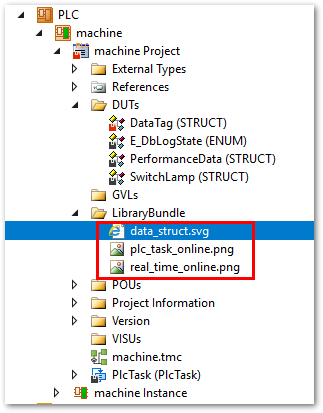
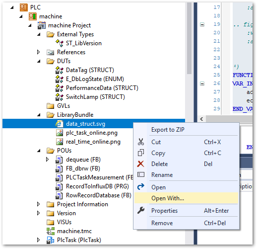
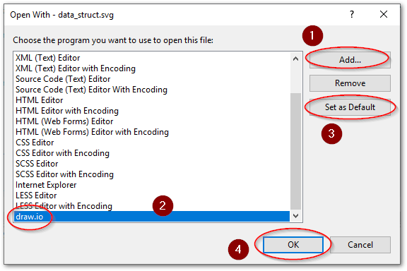
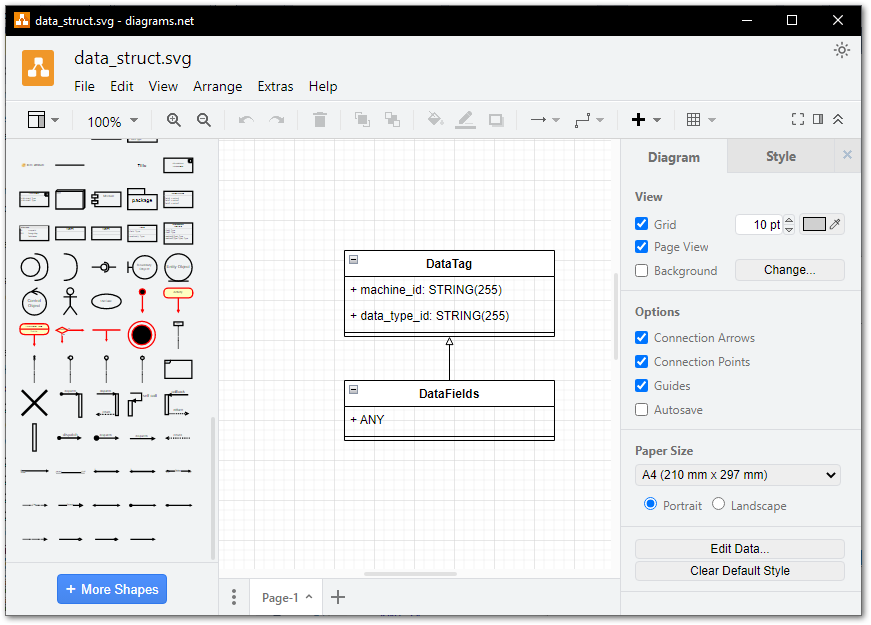
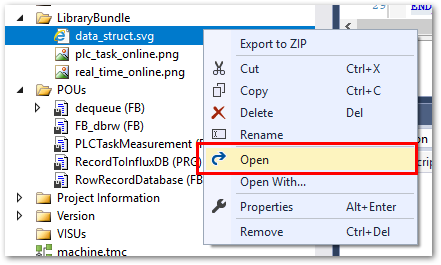
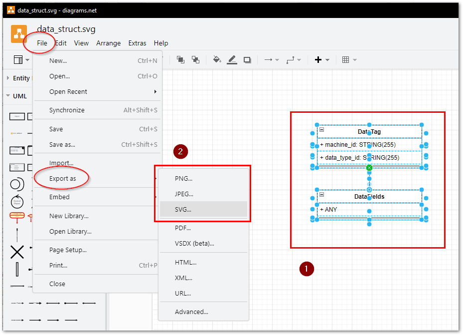
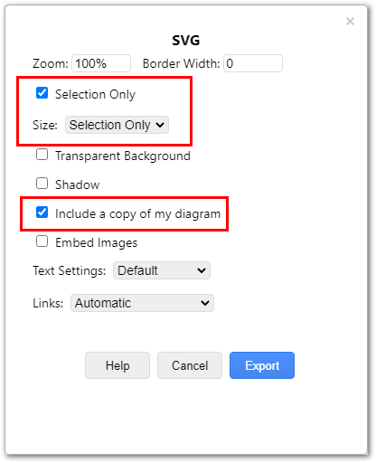

ライブラリドキュメントの作成#
ライブラリ化したソフトウェアの使い方をマニュアル化することは非常に重要です。プログラムオブジェクトごとにドキュメントとして提供する事が求められます。
TwinCATでは、プログラムの変数定義部の先頭にコメントにてドキュメントを記述することで、そのPOUの使い方のドキュメントを定義する事ができます。
本章では、このreStructuredTextと呼ばれるマークアップ言語を用いたドキュメント作成方法について説明します。
reStructuredTextとSphinx
reStructuredTextとは、主にPython言語のコミュニティにて開発されたマークアップ言語です。Sphinxと呼ばれるビルドツールにより、PDF, HTML, Word, epubなどさまざまな文書形式に整形出力できます。
reStructuredTextはMarkdownと異なり独自の方言が少ないマークアップ言語です。つまり文書作成のためのビルドシステムが変わっても同じ処理結果が得られます。
また、TwinCATで記述したST言語のソースファイルはXML形式で保存されており、簡単にreStructuredTextで記述したドキュメント部分のみを抜き出す事も可能です。これをSphinxで処理する事で、TwinCAT上だけではなく独立した文書として出力できます。
このように、TwinCATの持つオープンな仕組みによって、一度プログラムコード上にドキュメントを作成するとさまざまな形式に変換できることが大きな魅力です。
ライブラリドキュメントの概要#
ライブラリのドキュメントを参照するには、ライブラリマネージャを開く必要があります。ライブラリマネージャは、PLCプロジェクト内のReferencesツリーをダブルクリックする事で開きます。（図 3.15）
{kind=link}
図 3.15 ライブラリマネージャとドキュメント#
ライブラリマネージャのライブラリを選択すると、ライブラリ内のオブジェクトへの一覧と共にドキュメントへのリンクが張られた目次が表示されます。
注釈
目次が表示されるのは、reStructuredTextで記述されたライブラリのみです。
PLCのソースコードに記述された内容を基に、各オブジェクトごとに次の内容がドキュメント出力されます。
- Inputs/Outputs:
プログラムオブジェクトの入出力変数定義部に記述した行コメントの内容が自動的にComment欄に一覧されます。
- Documentation:
各オブジェクトの先頭コメントに記載したreStructuredTextの整形した文書が表示されます。
次節からそれぞれの使用例を見てみましょう。
Inputs/Outputsタブ#
ライブラリマネージャの図 3.17の通り、ファンクションブロックやファンクションなどの入出力変数や、DUTsで定義される構造体やEnumなどの要素にプログラム上で記述された行コメント[1]が自動的に転記されます。
{kind=link}
図 3.16 行コメントのInput/Outputへの自動記述#
{kind=link}
図 3.17 Inputs/Outputsタブ#
Documentationタブ#
プログラムオブジェクト（POUs, DUTs）毎に変数定義部を持っています。この先頭部分に複数行コメントで reStructuredText と呼ばれるマークアップ記述方式のドキュメントを定義します。
(*
このファンクションブロックは、IPCの各種パフォーマンス情報を収集する機能を持ちます。
.. csv-table::
:header: Rev., Date,Description
0, 2023-02-27,Initial edition
Overview
=====================
このファンクションブロックは、RealTimeのOnlineタブで表示しているCPU占有率やレイテンシ、および、PlcTaskのOnlineタブで表示しているタスク実行時間、Exceedカウンタをまとめて収集します。
.. figure:: ../../LibraryBundle/real_time_online.png
:width: 500px
:align: center
.. figure:: ../../LibraryBundle/plc_task_online.png
:width: 500px
:align: center
*)
FUNCTION_BLOCK PLCTaskMeasurement
VAR_INPUT
ads_port_of_task: UINT := 350;
ec_master_netid: T_AmsNetId;
END_VAR
:
:
上記のようにreStructuredTextで記述したドキュメントを記述したライブラリを読み込んだPLCプロジェクトのライブラリマネージャでは、図 3.18のような整形された文書が表示されます。図や表、表題、箇条書きなど多彩なレイアウト文書の閲覧が可能です。
{kind=link}
図 3.18 Documentationタブ#
reStructuredTextを書くために必要な設定#
ライブラリを保存する前に、PLC プロジェクトのPropertyでDocument formatの項目でreStructuredTextを選んでおく必要があります。
{kind=link}
reStructuredTextの基本の書き方#
reStructuredTextの基本的な記述ルールについては、Sphinxの以下のリンクを参照いただき、Documentationタブ節に記載した通り各プログラムオブジェクトの変数宣言部の先頭の複数行コメントとして、そのプログラムの構成や機能仕様など記述してください。
本書では、reStructuredTextの基本的な書き方についての説明は省きます。
作図と図の挿入#
PLCプロジェクト内での図などのファイルの取り扱い方は少し工夫が必要です。ここではpngやsvgファイルといった図形式のファイルの取り扱い方を中心に説明します。
イメージファイルの置き場所の作成#
ライブラリの元プロジェクトを新規作成後、初回だけイメージファイルの置き場所となるフォルダを作成します。すでにフォルダが存在する場合はこの節の手順は実施する必要はありません。
{kind=link}
{kind=link}
イメージファイルの配置と文書への挿入#
追加したフォルダに作成した図をドラッグアンドコピーします。ファイル形式は、svgまたはpng, jpeg等です。
次の2通りの方法で図の挿入命令を記述します。
図の挿入命令を記述します。図は必ずしも配置命令を記述した個所に固定されない
figure方式と、定義した場所に固定されるimageの二通りがあります。figureの場合は文書定義した場所に配置されるとは限らず、文書処理コンパイラによるロジックにより最適な位置に配置されます。このため離れた位置に配置された図に対する文書中のリンク（相互参照）のために必要となる:name:プロパティとキャプションの定義が必要となります。対してimageで配置した図はかならずその位置へ配置されます。ページ概念のある文書ファイル形式に出力する場合、位置によってはページ余白位置がとても大きくなる可能性もあります。以上を踏まえて最適な方法をお選びください。
位置を固定しない図の場合（
figure）.. figure:: ../../LibraryBundle/data_struct.svg :width: 250px :align: center :name: figure_data_structure influxDBのデータタグの格納用構造体定義
位置を固定する図の場合（
image）.. image:: ../../LibraryBundle/data_struct.svg :width: 250px :align: center
- .. figure:: イメージファイルパス または .. image:: イメージファイルパス#
図の挿入命令の始まりになります。ファイルパスは、プログラムコードがPOUsの直下にある場合、2階層上に戻った場所から作成したイメージファイル格納用フォルダ以下のファイルの場所までの相対ファイルパスを指定します。それより深い階層にプログラムコードを配置されている場合は階層に合わせて相対パスを指定してください。
必ず最初の
..とfigure::とファイルパスの間には半角のスペースを入れてください。これ以後の項目について、ここで定義した図に関する設定項目を全て半角3文字以上字下げして定義します。
:width:任意の画像の幅の大きさ画像幅の大きさを指定します。
:align:leftorcenterorright図の配置を左右、中央いずれかに寄せることを指定します。
:name:参照キーワード（figureのみ）後述する相互参照に用いるキーワードを半角英数で定義します。相互参照を行わなければ不要です。
- 1行空けてキャプション（
figureのみ） 「influxDBのデータタグの格納用構造体定義」にある通りキャプションを定義します。相互参照を行わなければ不要です。
figureで定義したイメージに対するリンク（相互参照）を本文中に記述する方法先ほど示した
figure命令の例のキャプションである、「influxDBのデータタグの格納用構造体定義」に対して本文から参照リンクを張ることを相互参照と呼びます。説明本文中に
:numref:に続いて:name:で定義したキーをバックスラッシュで囲む事でキャプションの文字を使った図へのリンクに置き換えられます。注意
:numref:`figure_data_structure`の前後には必ず半角スペースを入れてください。
{kind=link}
例としてある構造体に記述したreStructuredTextドキュメントとその文書整形イメージを挙げます。
(*
:作成日: 2023/3/1
:開発者: *** **
TF6420 database serverを用いた、influxDBのMeasurementにデータを書き込む際のタグ部分の構造体です。
タグを定義する構造体は :numref:`figure_data_structure` に示す通り、フィールドを定義する構造体により継承されます。
.. figure:: ../../LibraryBundle/data_struct.svg
:width: 250px
:align: center
:name: figure_data_structure
influxDBのデータタグの格納用構造体定義
*)
TYPE DataTag:
STRUCT
{attribute 'TagName' := 'machine_id'}
machine_id : STRING(255); // 設備名
{attribute 'TagName' := 'data_type_id'}
data_type_id : STRING(255); // 発生イベント種別
END_STRUCT
END_TYPE
{kind=link}
図 3.19 Inputs/Outputsの例#
{kind=link}
図 3.20 Documentationの例#
図の編集#
一度登録した図を編集する場合は、ソリューションエクスプローラ上から編集できます。最初だけ、次の手順で拡張子毎に編集ソフトウェアを関連付けを行います。
作図したファイルを選択し、右クリックして現れるポップアップメニューから
Open With...を選択Open With ウィンドウにて次の順でボタン操作を行い、お気に入りの作図編集ツールと関連付けを設定した上で開きます。
編集し終わったら上書き保存を行います。
再度TwinCATプロジェクトからライブラリを作る手順の手順のlibrary保存とインストールを行い、ドキュメントが正しく反映されたか確認します。
一度編集ツールとの関連付け設定が行われたら、次からは
Openで同じツールを使って編集する事ができるようになります。
{kind=link}
{kind=link}
{kind=link}
{kind=link}
お勧めの作図ツール
開発者向け作図ツールにはさまざまなものがありますが、最もお勧めするのは draw.io です。この理由として、
Documentationで直接表示可能な汎用的なイメージファイル形式であるPNGやSVG形式をエクスポートでき、且つ、この中にdraw.ioの編集データを含めることができる。
編集データを含むTwinCAT上のイメージファイルにdraw.ioを関連付けることで、TwinCAT上から直接編集・更新ができる。
この作図ツールのネイティブなファイル形式は、*.drawio という独自のXMLファイルです。汎用的な画像ファイルpngやベクタファイルであるSVGにはメタデータを内包するフォーマット仕様となっており、ここにdraw.ioのデータを埋め込む事ができます。
よって、最初に新規作成する場合もdraw.ioで作図する必要があります。このとき、次の方法でSVGやPNGにエクスポートすることで、編集データを含んだファイルを取り出す事ができます。
目的とする図だけを選択した上でファイルメニューから任意の形式のエクスポートメニューを選ぶ
 エクスポートウィンドウでは必ず次の二か所をチェックを入れてエクスポートする。
選択範囲のみ
ダイアグラムのコピーを含める

{kind=link}
{kind=link}
出力したファイルはこの節の手順でPLCプロジェクトフォルダ内に格納して、figureとして読み出せるように定義します。
以下のURLからdesktop版をダウンロードしてインストールし、ここに示す方法でVisualStudio上の画像ファイルと関連付け設定を行ってください。
draw.ioの入手